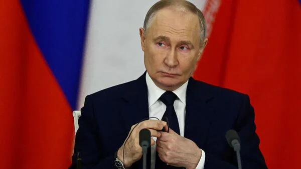

Los Angeles Times
Putin echoes Trump’s claims about Ukraine war and 2020 election

Russian President Vladimir Putin praised President Trump as a “clever and pragmatic man” focused on U.S.
interests. The relationship between the men has been much scrutinized. (Ramil Sitdikov / Associated Press)
MOSCOW — Russian President Vladimir Putin on Friday echoed President Trump’s claim that the conflict in Ukraine could have been prevented had he been in the White House in 2022. He also echoed Trump’s false claims about fraud in the 2020 election.
Putin said Moscow is ready for talks with the U.S. on a broad range of issues.
In an interview with Russian state television, Putin praised Trump as a “clever and pragmatic man” who is focused on U.S. interests.
“We always had a businesslike, pragmatic but also trusting relationship with the current U.S. president,” Putin said. “I couldn’t disagree with him that if he had been president, if they hadn’t stolen victory from him in 2020, the crisis that emerged in Ukraine in 2022 could have been avoided.”
Advertisement